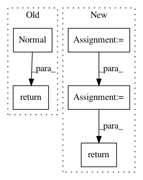

f2222bea458b02680de06f7c2445662ca6badf16,gpytorch/models/pyro_variational_gp.py,PyroVariationalGP,model,#PyroVariationalGP#Any#Any#,27
Before Change
num_minibatch = variational_dist_f.event_shape.numel()
// Now make the variational distribution Normal - for conditional indepdence
variational_dist_f = pyro.distributions.Normal(variational_dist_f.mean, variational_dist_f.variance)
with pyro.poutine.scale(scale=float(self.num_data / num_minibatch)):
return self.likelihood.pyro_sample_outputs(y, variational_dist_f)
After Change
// Draw samples from p(u) for KL divergence computation
inducing_values_samples = self.sample_inducing_values(prior_dist)
sample_shape = inducing_values_samples.shape[:-len(prior_dist.shape())] + \
torch.Size([1] * len(prior_dist.batch_shape))
// Get the variational distribution for the function
function_dist = self(input)
// Go from function -> output
num_minibatch = function_dist.batch_shape[-1]
with pyro.poutine.scale(scale=float(self.num_data / num_minibatch)):
return self.likelihood.pyro_sample_output(
output, function_dist, *params, **kwargs, sample_shape=sample_shape
)
def sample_inducing_values(self, inducing_values_dist):
Sample values from the inducing point distribution `p(u)` or `q(u)`.
In pattern: SUPERPATTERN
Frequency: 3
Non-data size: 5
Instances
Project Name: cornellius-gp/gpytorch
Commit Name: f2222bea458b02680de06f7c2445662ca6badf16
Time: 2019-03-26
Author: gpleiss@gmail.com
File Name: gpytorch/models/pyro_variational_gp.py
Class Name: PyroVariationalGP
Method Name: model
Project Name: facebookresearch/Horizon
Commit Name: 559656ad26529e5c408de1390db194128520eb7e
Time: 2020-08-04
Author: kaiwenw@fb.com
File Name: reagent/models/actor.py
Class Name: GaussianFullyConnectedActor
Method Name: get_log_prob
Project Name: tristandeleu/pytorch-maml-rl
Commit Name: 551436a8106f3292db2f7d1a6da3462f2aa8bb6b
Time: 2018-06-14
Author: tristan.deleu@gmail.com
File Name: maml_rl/policies/normal_mlp.py
Class Name: NormalMLPPolicy
Method Name: forward